年薪20万的梦想。。。
python对文件、目录能做什么？或者说我们需要python替我们做什么？最经常的操作就是对文件的：
打开、关闭、读取、写入、修改、保存等等对目录的操作，无非就是：创建目录、删除目录、更改目录名字等等。
我们先认识一下OS模块，os模块以及子模块path中包含了获取系统信息、以及对系统进行设置的函数。提供了Python
系统和操作系统进行交互的一个接口。
我们怎么使用os模块中的函数呢？看下代码：
1 import os #导入os模块我们输入这样一行代码，就代表将OS模块导入在，我们的python文件中，这样我们就可以，使用os模块下面的各个函数了！是不是很简单。
接下来我们认识第一个函数：
getcwd() 该函数用于获取当前工作目录。
1 import os #导入os模块
2 print('演示获取当前目录：',os.getcwd()) #使用格式：模块.函数() 记住中间有个点os.getcwd()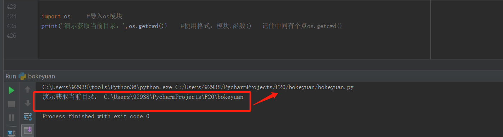
我们看到了当前工作目录，那么我们用第二个函数，可以看到当前目录下包含了那些文件或目录。
listdir() 用于看到当前目录下包含了那些文件或目录，并存放在一个列表中。
1 import os #导入os模块
2
3 print(os.listdir(os.getcwd())) #使用格式：os.listdir() 用于列出当前目录包含的文件名和目录名，存放在列表中。
接下来我们看到自己想要找到目录后，我们切换目录。
1 os.chdir('C:/Users/92938/PycharmProjects') #改变目录，指定一个目录的绝对路径。
2 print('演示获取当前目录：',os.getcwd()) #显示改变目录后的路径位置
3 print(os.listdir(os.getcwd())) #显示改变目录后的目录中包含什么文件或目录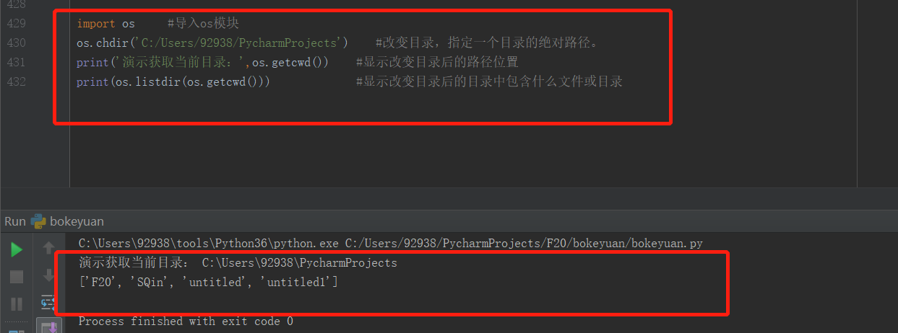
接下来我们再看看怎么创建目录：
mkdir() 创建目录，如果在创建目录的时候，创建的目录名与现有的目录名重名，会报异常。
makedirs() 创建目录，与前者区别在于，它可以创建多层级的目录。
我们先创建下目录看下代码的实现：
1 import os #导入os模块
2 os.chdir(r'C:\Program Files\tools') #改变目录，指定一个目录的绝对路径。 前面的r是转义字符，前面的总结有讲过它的使用方法。
3 print('演示获取当前目录：',os.getcwd()) #显示改变目录后的路径位置
4 print(os.listdir(os.getcwd())) #显示改变目录后的目录中包含什么文件或目录
5
6 os.mkdir('tt') #创建一个文件夹
7 print(os.listdir(os.getcwd())) #查看创建的tt文件夹mkdir() 创建的文件夹是当前目录的文件夹，不能同时创建多层。
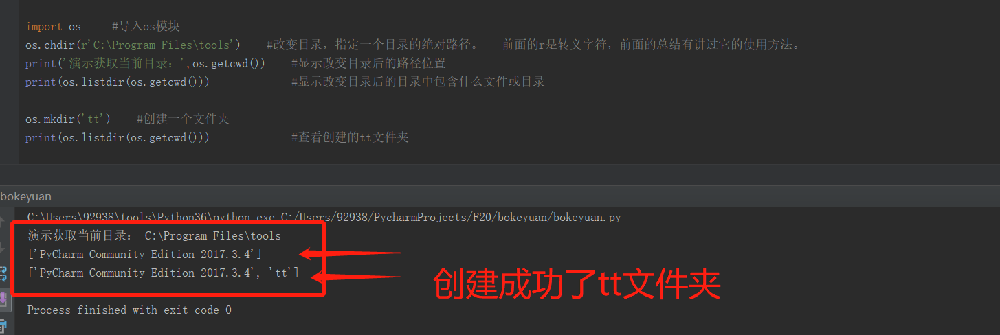
接下来看第二种创建方式：多层创建目录：
1 import os #导入os模块
2 os.chdir(r'C:\Program Files\tools') #改变目录，指定一个目录的绝对路径。 前面的r是转义字符，前面的总结有讲过它的使用方法。
3 print('演示获取当前目录：',os.getcwd()) #显示改变目录后的路径位置
4 print(os.listdir(os.getcwd())) #显示改变目录后的目录中包含什么文件或目录
5
6 os.makedirs('aa/bb/cc')
7 print(os.listdir(os.getcwd())) #查看创建的aa文件夹
8 os.chdir(r'C:\Program Files\tools\aa') #查看aa文件夹中是不是有bb文件夹创建了这么多垃圾文件，我们看看怎么删除文件夹吧：
rmdir() 删除指定的目录（文件夹），如果目录里面有其他目录或文件不是空目录，会报错。
removedirs() 删除指定的目录，可以指定多级 aa/bb/cc 这样会同时删除 aa/bb/cc三个目录。
话不多说看代码：
1 import os #导入os模块
2 os.chdir(r'C:\Program Files\tools') #改变目录，指定一个目录的绝对路径。 前面的r是转义字符，前面的总结有讲过它的使用方法。
3 print('演示获取当前目录：',os.getcwd()) #显示改变目录后的路径位置
4 print(os.listdir(os.getcwd())) #显示改变目录后的目录中包含什么文件或目录
5
6 os.rmdir('tt')
7 print(os.listdir(os.getcwd())) #查看当前目录下的tt文件夹是不是被删除rmdir() 不能进行多层级的同时删除目录，如果目录不为空，删除会报错。
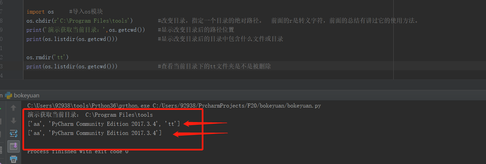
再看下多层级同时删除，切记，目录里面需要为空，没有任何文件哦，不然会报错的~~~
1 import os
2 os.chdir(r'C:\Program Files\tools') #切换到指定的文件目录
3 print('查看是不是我们切换的目录地址：',os.getcwd()) #查看是不是我们切换的目录
4 print(os.listdir(os.getcwd())) #这俩函数组合使用，查看当期目录下面有哪些目录或文件
5
6 os.removedirs(r'aa\bb\cc') #多层级删除目录，aa\bb\cc三个空目录同时删除
7 print(os.listdir(os.getcwd())) #查看删除后还有aa文件目录吗？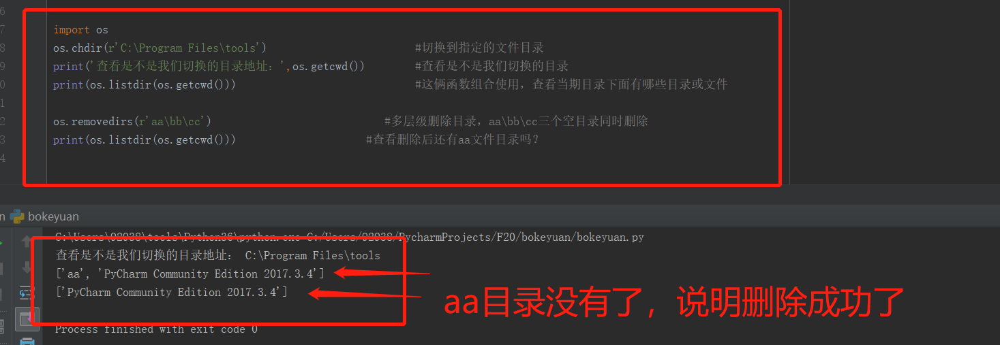
最后我们看下怎给当前目录更改名字？
目录的名字更改：
rename() 括号中需要两个参数： 旧文件名，新文件名 记住中间是英文逗号。
renames() 同样的，这个函数可以同时修改多层级目录的名字。比如： aa\bb\cc 改为 dd\ee\ff
看代码吧：
1 import os #导入os模块
2 os.chdir(r'C:\Program Files\tools') #切换到指定的路径目录
3 print(os.listdir(os.getcwd())) #查看当前切换的目录下面有哪些目录
4 os.mkdir('tt')
5 print(os.listdir(os.getcwd())) #查看当前目录有没有创建成功tt目录
6 os.rename('tt','gg')
7 print(os.listdir(os.getcwd())) #查看当前tt目录是不是变成了gg目录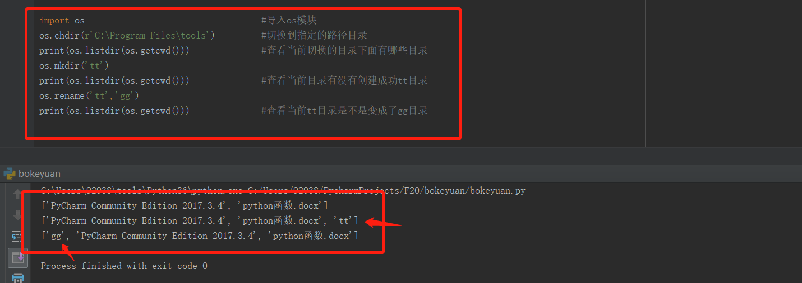
接下来看多层级同时更改目录名称
1 import os #导入os模块
2 os.chdir(r'C:\Program Files\tools') #切换到指定的路径目录
3 print(os.listdir(os.getcwd())) #查看当前切换的目录下面有哪些目录
4 os.makedirs(r'aa\bb\cc')
5 print(os.listdir(os.getcwd())) #查看当前目录有没有创建成功aa目录
6 os.renames(r'aa\bb\cc',r'dd\ee\ff')
7 print(os.listdir(os.getcwd())) #查看当前aa目录是不是变成了dd目录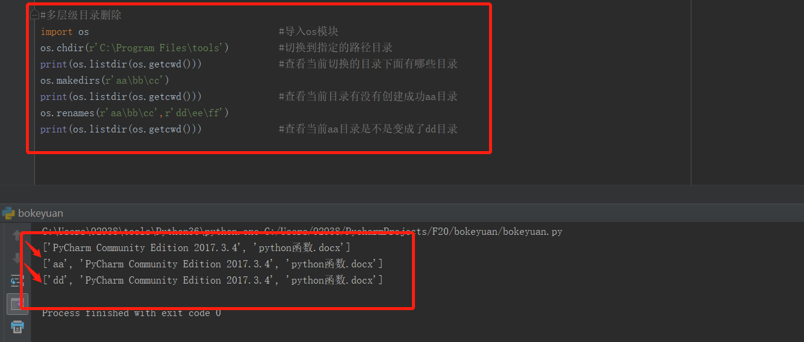
目录的基本操作就是这些，大家要请于练习，如果有问题可以留言哦~
接下来我们看下对文件的操作有哪些常用的函数吧!
文件对于python来说是一个文件对象，不管是对文件有任何操作，我都需要通过open()函数来获取该文件对象并赋值给一个变量。
open(file_name,access_mode='r') 打开文件的函数中有两个参数，第一个参数是file_name：文件名，可以是绝对路径，也可以是相对路径。
第二个参数是access_mode：访问文件的方式：访问文件的方式有这么几种：r、w、a、r+、w+ 接下来我们依次演示：
指针：代表文件中的光标目前所在位置。如图：
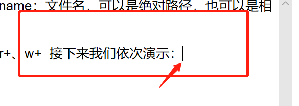
开始看代码：
open(file_name,'r') 以读的方式打开文件,文件指针会在文件的开头
1 file_a =open(r'C:\Program Files\tools\file_a.txt','r')#在绝对路径打开file_a文本文件,记得加文件后缀.txtopen(file_name,'w') 以写的方式打开文件，如果文件存在，会被清空。如果不存在，创建一个文件
1 file_a =open(r'C:\Program Files\tools\file_a.txt','w')#在绝对路径打开file_a文本文件,记得加文件后缀.txtopen(file_name,'a') 为了在文件的末尾追加内容打开文件，如果文件存在，文件的指针在文件的末尾，如果不存在就创建一个文件
1 file_a =open(r'C:\Program Files\tools\file_a.txt','a')
现在开始正式的读取文件：
read() 这个方法有一个参数，括号中可以输入数字，表示读取多少个字节的内容。如果不填写，默认读取所有文件内容
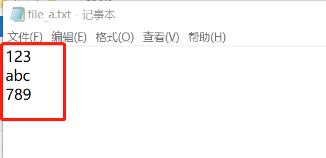
以下代码将以次文件截图为依据，我们可以看到文件是txt文本，里面有三行数据，第一行是：123 第二行是：abc 第三行是：789
1 file_a =open(r'C:\Program Files\tools\file_a.txt','r') #首先我们以支持读写的模式打开文件，然后将文件传递给变量file_a
2
3 file_read = file_a.read(2) #开始读取文件的内容，读取前两个字符 12
4 print(file_read) #将读取的内容打印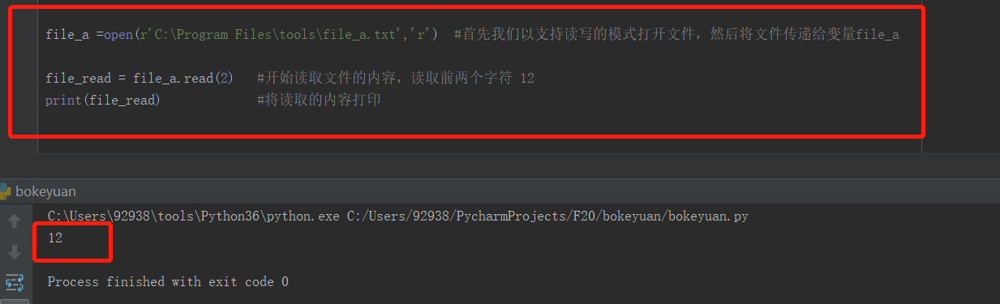
我们继续读取后面的内容，每次读取两个字节：
1 file_a =open(r'C:\Program Files\tools\file_a.txt','r') #首先我们以支持读写的模式打开文件，然后将文件传递给变量file_a
2
3 file_read = file_a.read(2) #开始读取文件的内容，读取前两个字符 12
4 print(file_read) #将读取的内容打印
5
6 file_read2 = file_a.read(2) #再次读取2个字节的内容
7 print(file_read2) #将读取的内容打印，我们发现第一行只有3这么一个字节了，所以只有3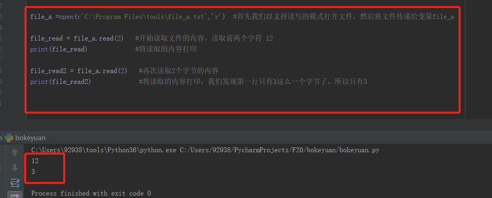
按字节多少，去读取文本中的内容，这个方法你一定明白了吧！
那么我们用默认的方式，不添加任何参数，直接读取所有的内容：
1 file_a =open(r'C:\Program Files\tools\file_a.txt','r') #首先我们以支持读写的模式打开文件，然后将文件传递给变量file_a
2
3 file_read = file_a.read() #开始读取文件的内容，默认不填写参数，默认读取所有的内容
4 print(file_read) #将读取的内容打印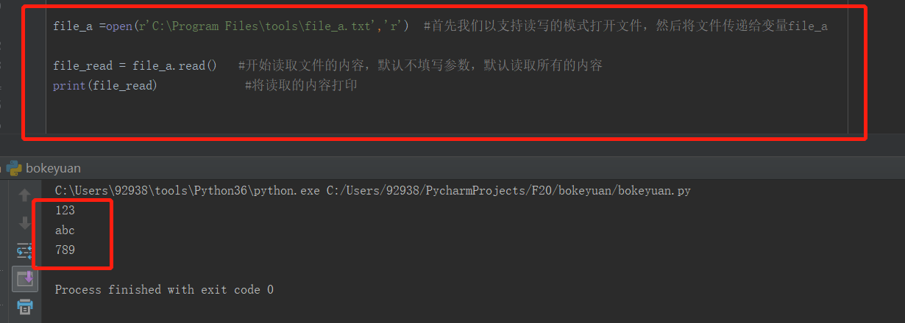
close() 关闭文件
1 file_a.close() #关闭文件，多次按字节打开文件后，文件中的指针光标位置会改动，所以处理文件后记得关闭哦1 file_a =open(r'C:\Program Files\tools\file_a.txt','r') #首先我们以支持读写的模式打开文件，然后将文件传递给变量file_a
2
3 file_read = file_a.read() #开始读取文件的内容，默认不填写参数，默认读取所有的内容
4 print(file_read) #将读取的内容打印
5
6 file_a.close() #关闭文件，多次按字节打开文件后，文件中的指针光标位置会改动，所以处理文件后记得关闭哦
有时候，如果我们不知道第一行有多少个字节，但是我们需要的内容就是在第一行，那么我们就要用到它来获取第一行的内容：
readline() 默认获取第一行内容，多次调用，文件指针光标会读取下一行内容。
1 file_a =open(r'C:\Program Files\tools\file_a.txt','r') #首先我们以支持读写的模式打开文件，然后将文件传递给变量file_a
2
3 file_read = file_a.readline() #获取第一行内容
4 print(file_read) #将读取的内容打印
5
6 file_read = file_a.readline() #第二次用，所以获取的是第二行的内容
7 print(file_read) #将读取的内容打印
8
9 file_a.close() #关闭文件，多次按字节打开文件后，文件中的指针光标位置会改动，所以处理文件后记得关闭哦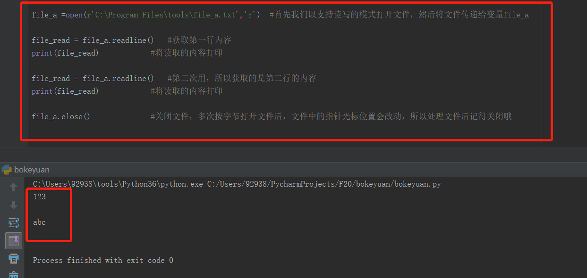
接下来我们看看怎么获取一行内容，并且把内容存在一个list列表中，方便我们操作：
readlines() 它可以获取一行内容，并且把内容存在一个list列表中
1 file_a =open(r'C:\Program Files\tools\file_a.txt','r') #首先我们以支持读写的模式打开文件，然后将文件传递给变量file_a
2
3 file_read = file_a.readlines() #获取第一行内容,并把内容放在列表中
4 print(file_read) #将读取的内容打印，看第一行内容是不是在列表中
5 print(file_read[1]) #既然是列表，肯定支持元素下标获取我们要得内容
6 file_a.close() #关闭文件
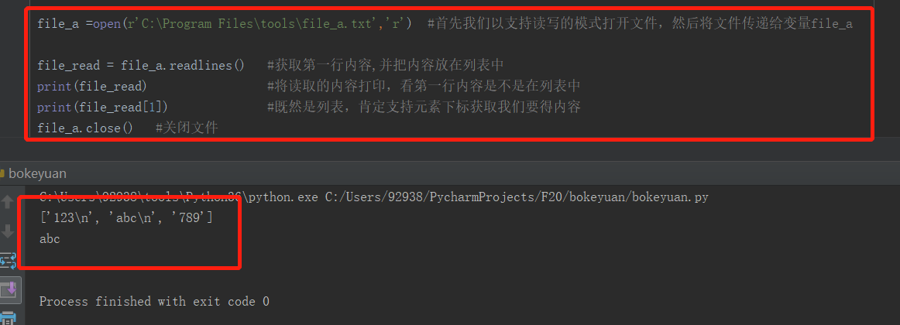
最后我们看下文件内容的写入，我们知道，刚才的文件中内容是：有三行数据，第一行是：123 第二行是：abc 第三行是：789
现在我们在里面加点料~~~
文件对象内置的有write() 可以向当前文件指针的位置，写入字符串到文件中。
文件对象的内置方法tell() 可以获取到当前文件指针的位置
文件对象的内置方法seek() 可以在文件中前后移动指针的位置，它有两个参数，第一个参数是：offset，表示移动多少字节的位置。第二个参数是：whence，表示从什么地方开始移动。
格式：file_a.seek(offset,whence)
获取当前文件指针的位置：
1 file_a =open(r'C:\Program Files\tools\file_a.txt','w+') #首先我们以支持读写的模式打开文件，然后将文件传递给变量file_a
2
3 print(file_a.tell()) #获取当前指针的位置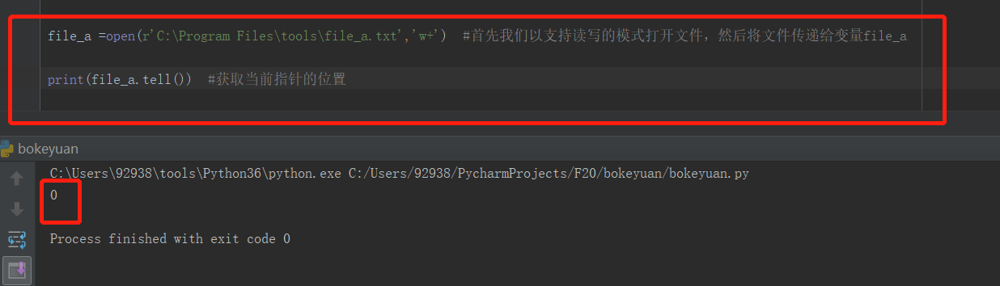
我们使用w+的方式写入，w+ ：如果文件存在，会在文件中写入内容，删除原来的内容。
1 file_a =open(r'C:\Program Files\tools\file_a.txt','w+') #首先我们以支持读写的模式打开文件，然后将文件传递给变量file_a
2
3 print(file_a.tell()) #获取当前指针的位置
4
5 file_a.write(r'www.baidu.com') #我们在第一行写入内容
6 print(file_a.tell()) #获取当前指针的位置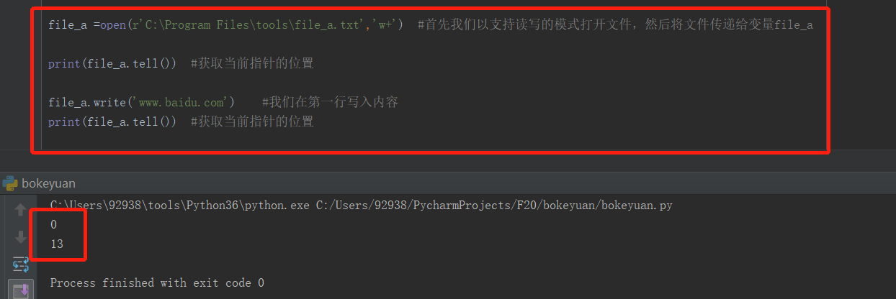
先到这里了~~基本的操作都是一样的，大家可以尝试写一下。不懂的记得评论，会回复大家的
----------------------------------------一个来自坚持笔记的新手